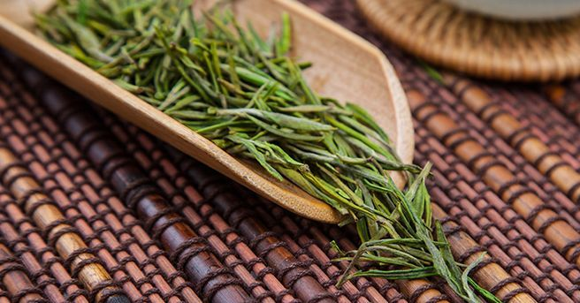

-
茶叶的发展历史
中国茶史的起源，众说纷纭，有先秦说、西汉说、三国说。茶以文化面貌出现，是在两晋北朝，最早喜好饮茶的多是文人雅仕。唐代开元以后，中国的"茶道"大行，饮茶之风弥漫朝野，宋承唐代饮茶之风，日益普及。茶圣陆羽有著《茶经》一书。《神农本草经》亦有记载关于茶这方面的知识。
2021-03-20 王一 -

眼花缭乱的饮茶习惯
茶是古代中国南方人民对中国饮食文化的贡献，也是中国人民对世界饮食文化的贡献。茶作为世界三大饮料之一。可以说爱茶者遍布世界各地。同时因为地理位置和文化传统的差异，各地喝茶的习惯和风俗也各不相同。因此各种配料独特，口味各异的茶也就相继出现。
2021-03-20 王一 -
茶叶中所含元素及成分
茶叶中的化学成分，经过分离鉴定的已经有700多种了，种类真是非常的丰富。另外，加工过程中，反应形成更多的成分。我们喝茶之所以能喝到苦味、涩味、甜味、回甘各种细腻的层次，香气有花香、果香、豆香、嫩香、蜜香，就是因为茶叶中的物质实在是太丰富了。
2021-03-20 王一 -
茶叶的缤纷种类
中国茶叶采摘、加工与饮用的历史十分悠久，目前我国茶叶可以划分为绿茶、黄茶、黑茶、白茶、青茶（乌龙茶）、红茶。茶叶均由茶这种作物的树叶加工而成，1753年，植物分类学家林奈把茶定名为“Theasinensis”，意即原产于中国的茶树，它的学名为：Camellia Sinensis(L．)0．Kuntze。
2021-03-20 王一 -

细品中国名茶
好茶可以理解为品质上乘的茶叶，中国茶由于品类众多,好茶既有共性，也有个性。不同茶类的品种不同，制作工艺也不同，感官风味各具特色。中国名茶可细分六大茶类，品种数量可谓众多，以浙江省为例,各产茶区都有特色茶品，如浙江杭州西湖风景名胜区的西湖龙井、余杭区的径山茶，湖州安吉县的安吉白茶、德清县的莫干黄芽、长兴县的顾渚紫笋茶等，不一而足。
2021-03-20 王一 -
六大茶类各自的功效
中国是茶叶的故乡，有着悠久的种茶、制茶和饮茶历史。同时也拥有着全世界最多的茶叶种类，而这些不同茶叶又被归为6个基本茶类—绿茶、红茶、青茶（乌龙茶）、白茶、黄茶、黑茶。绿茶，零发酵，茶多酚最多，性微寒，微苦，回甘。可清热祛燥，提神醒脑，不适合肠胃较弱的人群。白茶，轻度发酵，茶性清凉，滋味清淡、回甘。富含茶多糖，适合降糖需求人群。
2021-03-20 王一
总机：0001-1111111
电话：1111-1111-111
联系人：某某
邮箱：153@qq.com
网址：http://www.下次一定.com
地址：中国.江苏省南京市浦口区 南京信息工程大学
电话：1111-1111-111
联系人：某某
邮箱：153@qq.com
网址：http://www.下次一定.com
地址：中国.江苏省南京市浦口区 南京信息工程大学